Comparison of delay under the manuscript learning policy on CapERA and AirScape.
All 20 predeclared development arms. No outcome filtering. See README.txt and metrics.csv.
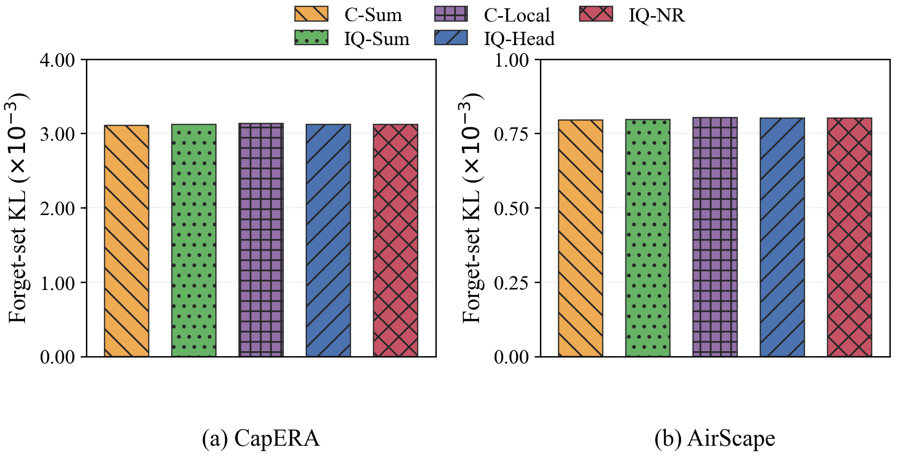
Comparison of matched kl under the current learning policy on CapERA and AirScape.
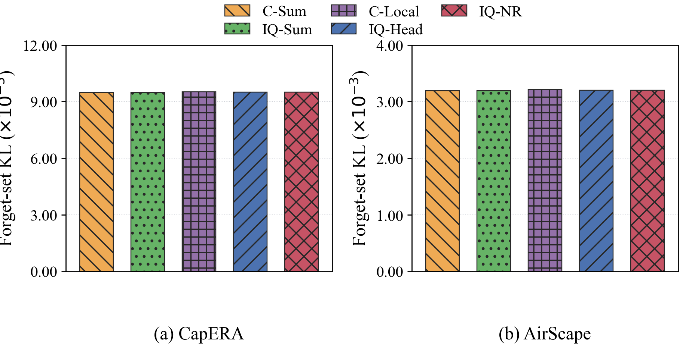
Comparison of common kl under the current learning policy on CapERA and AirScape.
Comparison of energy under the current learning policy on CapERA and AirScape.
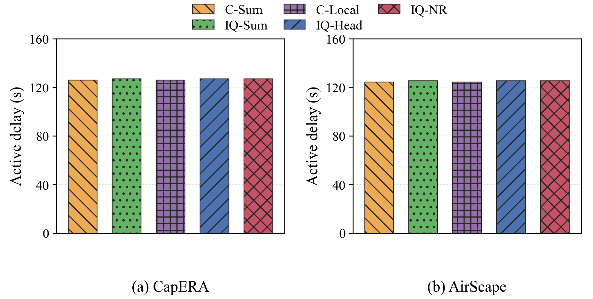
Comparison of delay under the current learning policy on CapERA and AirScape.
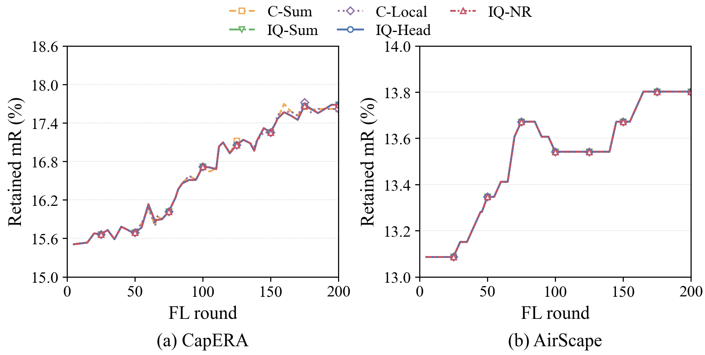
Comparison of retained mr (%) over FL rounds under the current learning policy on CapERA and AirScape.
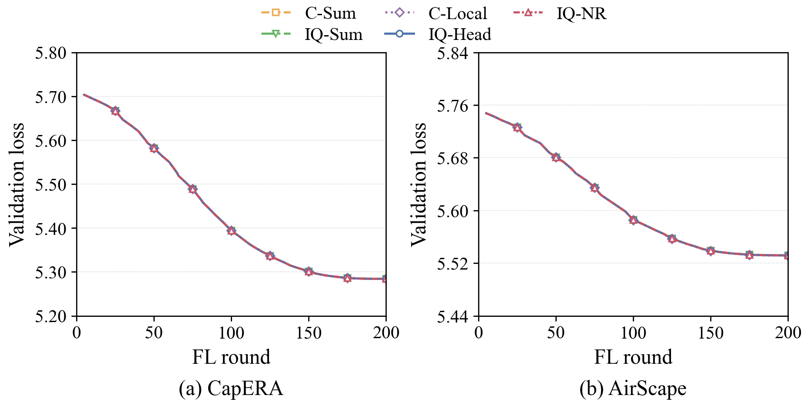
Comparison of validation loss over FL rounds under the current learning policy on CapERA and AirScape.
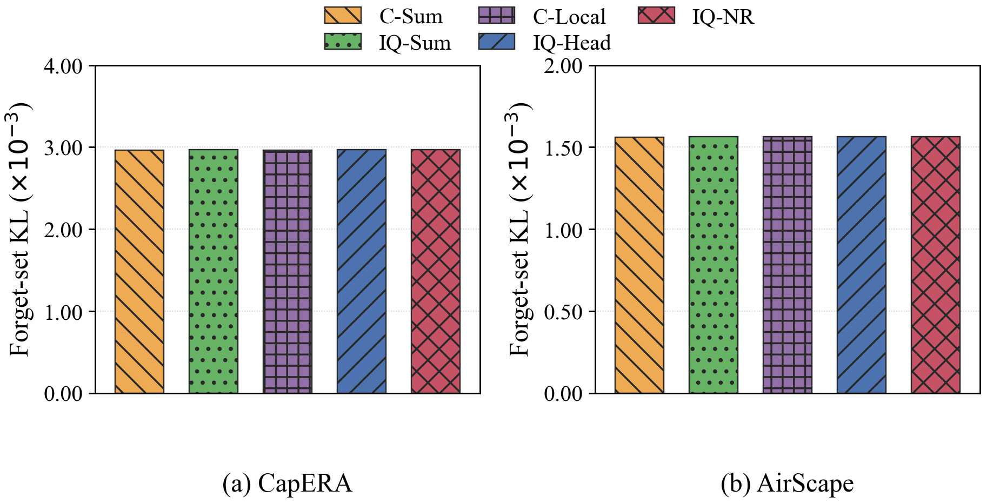
Comparison of matched kl under the manuscript learning policy on CapERA and AirScape.
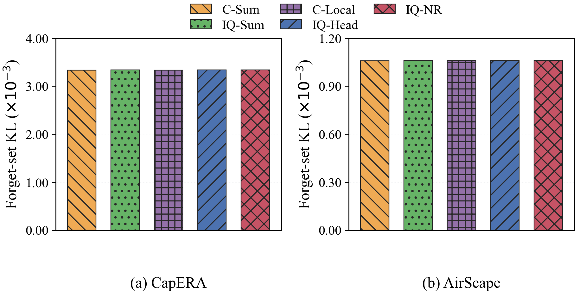
Comparison of common kl under the manuscript learning policy on CapERA and AirScape.
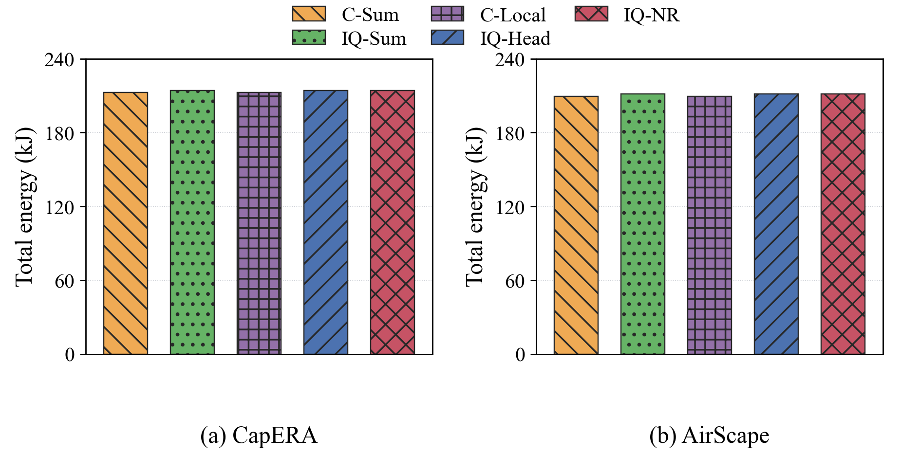
Comparison of energy under the manuscript learning policy on CapERA and AirScape.
Comparison of delay under the manuscript learning policy on CapERA and AirScape.
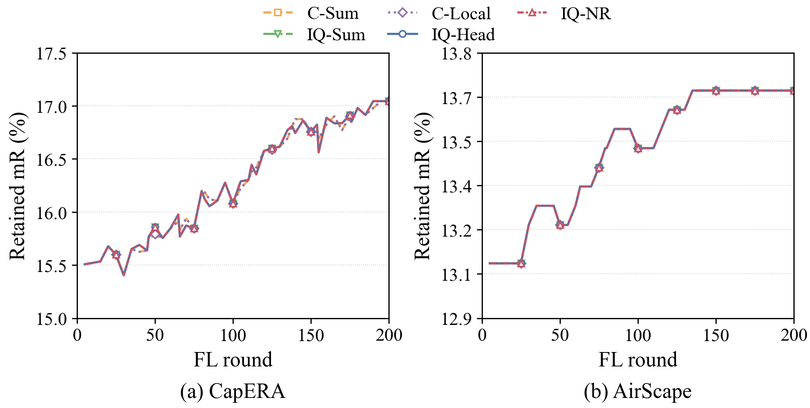
Comparison of retained mr (%) over FL rounds under the manuscript learning policy on CapERA and AirScape.
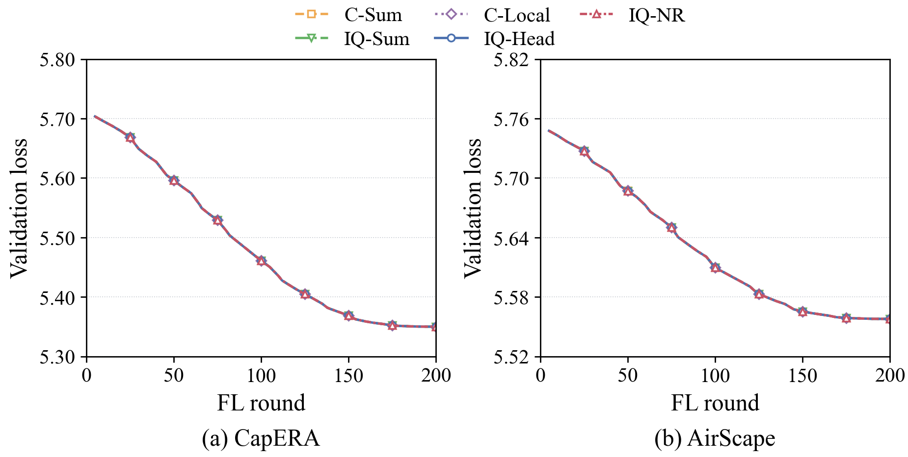
Comparison of validation loss over FL rounds under the manuscript learning policy on CapERA and AirScape.
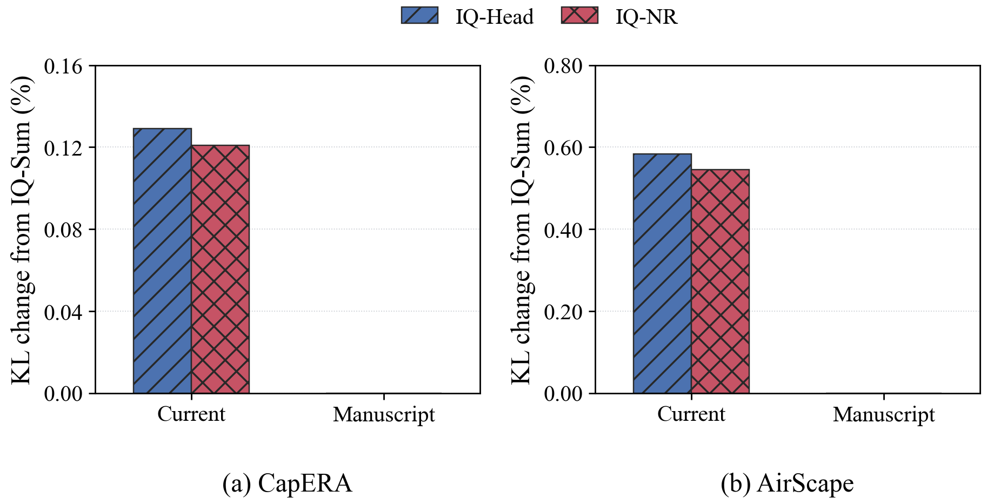
Change in matched-retraining forget-set KL relative to IQ-Sum on CapERA and AirScape; a positive value denotes higher divergence.